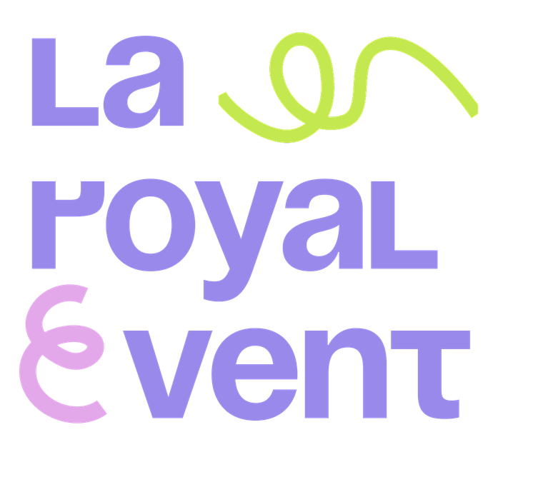

Индивидуальное путешествие · Египет
Пирамиды дважды, на рассвете и ночью. Два храма восточного берега Луксора, Фиванский некрополь, частное судно на Ниле только для вашей группы, приватный вечер на Филе и перелёт в Абу-Симбел.
| Раздел | О чём |
|---|---|
| Два варианта · стр. 1 | Чем они отличаются, что каждый даёт и что стоит, наша рекомендация |
| Вариант A, 9 дней · стр. 3 | Полная программа по дням, с 22 по 30 января |
| Вариант B, 10 дней · стр. 8 | Полная программа по дням, с 22 по 31 января |
| Питание и напитки · стр. 13 | Что входит в судовой пакет, что считается отдельно, все приёмы пищи по дням |
| Стоимость · стр. 16 | Полная смета на группу, что входит, график платежей 50/50 |
| Цена и размер группы · стр. 18 | Цена на человека при разном числе гостей, от 16 до 27 |
| Храмы маршрута · стр. 20 | История, тексты и эзотерическая традиция каждого объекта |
| Что можно добавить · стр. 26 | Десять мест вне программы, с ценой по времени |
С 22 по 28 января программа одинакова в обоих вариантах. Отличаются последние два дня: где проходит прощальный вечер и остаётся ли судно вашим на пятую ночь. В обоих случаях в день вылета домой вы никуда не бежите.
Высадка утром 29-го, Абу-Симбел самолётом. Прощальный ужин и ночь на острове Элефантина в Асуане. 30-го перелёт в Каир, полдня в городе и вылет домой после 14:00.
Абу-Симбел самолётом с возвратом на борт, чемоданы не трогаются. Прощальный ужин на верхней палубе в Асуане вечером 29-го, пятая ночь на судне. 30-го — утро в Асуане, перелёт в Каир, ночь в Four Seasons. 31 января — вылет домой.
| Что сравниваем | Вариант A · 9 дней | Вариант B · 10 дней |
|---|---|---|
| Ночей на борту | 4: 25, 26, 27, 28 января | 5: 25, 26, 27, 28, 29 января |
| Прощальный ужин | Остров Элефантина, Асуан, 29-го в 19:30 | Верхняя палуба судна, Асуан, 29-го в 19:30 |
| Ночь 29 января | Отель на острове Элефантина | Судно, стоянка в Асуане |
| Ночь 30 января | — | Four Seasons Cairo |
| День вылета домой | 30 января | 31 января |
| Чемоданы 29 января | Выселение в 05:15, багаж с группой весь день | Остаются в каютах, их никто не трогает |
| День 30 января | Перелёт в Каир, полдня в городе, вылет домой | Асуан: обелиск, Элефантина, музей ?, перелёт в Каир |
| Ограничение по билетам домой | Вылет из Каира не раньше 14:00 | Любое время 31 января |
| Стоимость | Ниже | Выше: пятая ночь фрахта и лишний день программы |
| Что требуется от гостей | 9 дней от дома до дома | 10 дней: на сутки дольше отсутствие |
Наша рекомендация
Если
гости могут дать ещё одни сутки — берите вариант B. В нём 29 января не нужно
ни выселяться, ни возить чемоданы: вы возвращаетесь из Абу-Симбела в собственную каюту,
отдыхаете и выходите к ужину на палубе, а Асуан получает ещё и спокойное утро 30-го.
Вариант A берём, когда поездка должна уложиться в девять дней. Он заметно дешевле
и тоже собран без спешки — но требует, чтобы рейс домой уходил из Каира после 14:00.
| Ночь | Вариант A | Вариант B |
|---|---|---|
| 22, 23 января | Giza Palace Hotel & Spa, Шейх Зайед | |
| 24 января | Sonesta St. George, Луксор ✓ | |
| 25, 26, 27, 28 января | Судно, частный фрахт | |
| 29 января | Отель на острове Элефантина, Асуан ~ | Судно, стоянка в Асуане |
| 30 января | Вылет домой | Four Seasons Cairo at Nile Plaza ~ |
| 31 января | — | Вылет домой |
Четыре ночи на борту. Прощальный ужин и последняя ночь — на острове Элефантина в Асуане, вечером 29 января. Утром 30-го перелёт в Каир, вылет домой после 14:00.
| Ночь | Где |
|---|---|
| 22, 23 января | Giza Palace Hotel & Spa, Шейх Зайед |
| 24 января | Sonesta St. George, Луксор ✓ |
| 25, 26, 27, 28 января | Судно, частный фрахт |
| 29 января | Отель на острове Элефантина, Асуан ~ |
| Дата | Где | Главное за день | Ночь |
|---|---|---|---|
| 22.01 пт | Каир | Прилёт, встреча, заселение. Экскурсий нет | Giza Palace |
| 23.01 сб | Каир | Плато Гизы до открытия 06:00 · завтрак в Khufu's · Большой Египетский музей · ужин в Lucida · ночные пирамиды 00:00–03:00 | Giza Palace |
| 24.01 вс | Каир → Луксор | Перелёт в 12:00 · Карнак 15:40 · Луксорский храм 17:45 | Sonesta St. George |
| 25.01 пн | Луксор | Шар на рассвете 06:00 · посадка на судно 11:30 · рабочая сессия | Судно, Луксор |
| 26.01 вт | Западный берег → река | Хатшепсут 06:15 · Дейр-эль-Медина · Колоссы · отход 09:45 · шлюз Эсны | Судно, в пути |
| 27.01 ср | Эдфу → Асуан | Храм Гора в Эдфу 07:00 · Ком-Омбо 15:00 · приход в Асуан | Судно, Асуан |
| 28.01 чт | Асуан | Сессия · фелюкка · закрытый остров Филе 17:00: напитки, храм, ужин, светозвуковой показ | Судно, Асуан |
| 29.01 пт | Абу-Симбел → Асуан | Высадка 05:15 · Абу-Симбел 08:15 · остров Элефантина 13:30 · прощальный ужин 19:30 | Отель, Элефантина |
| 30.01 сб | Асуан → Каир | Рейс 08:45 · Каир 10:10 · прощальный обед или базар · вылет домой после 14:00 | — |
22 января, пятница
Прилёт в Каир
Встреча в аэропорту, сопровождение через формальности, трансфер в отель, заселение. Экскурсий в этот день нет. Приветственный ужин, если последний рейс группы прилетает до 18:30. Вечером короткий брифинг по программе следующего дня.
23 января, суббота
Пирамиды дважды: на рассвете и ночью
| 05:15 | Выезд из отеля |
| 06:00–07:15 | Плато Гизы до открытия ~ Пирамиды снаружи, Сфинкс и согласованные зоны с русскоязычным египтологом, пока плато закрыто для остальных |
| 07:15–08:45 | Внутрь пирамиды Хеопса ~ Большая галерея и Камера царя. Для тех, кто захочет спускаться |
| 09:00–10:30 | Завтрак в Khufu's с видом на Великую пирамиду |
| 11:00–13:15 | Большой Египетский музей, в двух километрах от плато |
| 14:15–18:45 | Отдых в отеле. Вечер будет длинным |
| 19:00–21:15 | Ужин в Lucida Включены два бокала вина или пива на человека |
| 23:00 | Выезд на плато |
| 00:00–03:00 | Три часа внутри Великой пирамиды ~ Приватное открытие. Группа остаётся в камере, не выходя наружу; плато закрыто, в пирамиде никого, кроме вас |
Что такое приватное открытие ночью
Это отдельная услуга Министерства туризма и древностей: пирамиду открывают вне рабочих часов по именному разрешению, и внутри нет никого, кроме вашей группы. Открываются все три камеры — Камера царя с гранитным саркофагом, Камера царицы и подземная камера в скале под пирамидой. Минимальная продолжительность такого открытия — два часа; мы просим три.
Внутри нет вентиляции и прохлады: воздух тёплый и влажный даже в январе. Туалеты только снаружи, на плато. Разрешение оформляется заранее и требует паспортных данных и фотографий всех участников.
Внутрь Великой пирамиды — по желанию
Подъём идёт по узкому наклонному коридору, где почти всю дорогу приходится двигаться согнувшись. Дальше Большая галерея — сорок семь метров вверх под низким сводом, и Камера царя: голый гранит и пустой саркофаг. Внутри проводят тридцать–сорок пять минут, там жарко и влажно, украшений и надписей нет совсем. Сильное впечатление даёт именно галерея.
Не подходит тем, у кого клаустрофобия, проблемы со спиной, коленями или дыханием. Мы берём вход только тем, кто сам захочет, и никого не уговариваем: снаружи плато даёт не меньше. Входной билет внутрь оплачивается отдельно, около 30 долларов с человека.
Оденьтесь тепло
Январской ночью на плато около восьми-двенадцати градусов, и это открытое место с ветром с пустыни. Нужна тёплая куртка, закрытая обувь и шарф.
24 января, воскресенье
Перелёт в Луксор · Карнак · Луксорский храм
| 09:00 | Завтрак, выселение |
| 12:00 | Вылет в Луксор ~ |
| 14:30 | Заселение в Sonesta St. George, быстрый обед |
| 15:40–17:15 | Карнакский храм, крупнейший храмовый комплекс Египта |
| 17:45–19:00 | Луксорский храм с вечерней подсветкой |
| 20:15 | Ужин в отеле |
25 января, понедельник
Полёт на шаре · посадка на судно
| 06:00–07:15 | Приватный полёт на воздушном шаре ? Над Фиванским некрополем на рассвете. По желанию |
| 09:15 | Завтрак, выселение |
| 11:30 | Посадка на судно, распределение кают |
| 12:30 | Обед на борту |
| 14:30–17:30 | Рабочая сессия. Судно стоит у причала |
| 19:30 | Ужин на борту. Ночь у причала в Луксоре |
Полёты зависят от погоды. Наземная программа того же утра всегда готова как равноценная замена.
26 января, вторник
Западный берег · начало речного пути
| 06:15–07:30 | Храм Хатшепсут в Дейр-эль-Бахри, к открытию, до основного потока |
| 07:45–08:45 | Дейр-эль-Медина, деревня мастеров царских усыпальниц |
| 08:50–09:05 | Колоссы Мемнона |
| 09:45 | Возврат на судно, отход |
| 11:00–14:00 | Рабочая сессия в движении, кофе-брейк |
| день | Шлюз Эсны. Ужин подаётся по готовности судна |
Багаж остаётся в каютах: выселяться и перевозить чемоданы не нужно.
27 января, среда
Эдфу · Ком-Омбо · Асуан
| 07:00–08:45 | Храм Гора в Эдфу. Лучше всего сохранившийся храм Египта: целы крыша, стены и святилище |
| 10:30 | Завтрак на борту |
| 11:00–14:00 | Рабочая сессия в движении |
| 15:00–16:30 | Ком-Омбо. Двойной храм Себека и Хароериса, причал у самого храма |
| вечер | Приход в Асуан, ужин на борту |
28 января, четверг
Асуан · приватный вечер на Филе
| 08:00–12:00 | Рабочая сессия. Судно стоит, двигатели молчат |
| 14:00–15:30 | Свободное время либо частная фелюкка у острова Китченера |
| 16:30 | Выезд с борта, моторная лодка от пристани Шеллал |
| 17:00–18:30 | Приватное посещение храма Филе ✓ Встреча с приветственными напитками. Остров Агилкия закрыт, на нём только ваша группа |
| 18:30–19:45 | Ужин на острове Филе ✓ Накрывается для вашей группы на территории храмового комплекса |
| 20:00–21:00 | Приватный светозвуковой показ на Филе ✓ |
| 21:45 | Возврат на судно |
Весь вечер на острове — один приватный блок
Приветственные напитки, посещение храма, ужин и светозвуковой показ проходят подряд на закрытом для посторонних острове. Вы не возвращаетесь на борт между частями вечера и не делите остров ни с кем. Филе — храм богини Исиды, перенесённый камень за камнем на остров Агилкия при строительстве Асуанской плотины; добираются туда только по воде. Часы, приватный формат и ужин на острове подтверждены письменно.
29 января, пятница
Абу-Симбел · остров Элефантина
| 04:30 | Ранний завтрак на борту |
| 05:15 | Высадка. Багаж отдельной машиной едет сразу в отель |
| 07:00–07:45 | Перелёт Асуан — Абу-Симбел, рейс MS145 ~ |
| 08:15–10:45 | Абу-Симбел: Большой храм Рамсеса II и храм Нефертари |
| 11:55–12:40 | Обратный рейс MS146, возвращение в Асуан ~ |
| 13:30 | Заселение в отель на острове Элефантина ~ Переправа катером, багаж уже в номерах |
| 14:00 | Обед |
| 15:00–18:30 | Свободное время: бассейн, прогулка по острову, отдых |
| 19:30 | Прощальный ужин в панорамном ресторане с видом на Нил |
Почему последняя ночь в Асуане, а не в Каире
Рейсы Асуан — Каир устроены так, что дневных вылетов практически нет: утренний уходит в 08:45, когда группа ещё в Абу-Симбеле, а следующий только в 20:15. Ночь в Асуане превращает эту дыру в спокойный день на острове — и прощальный ужин проходит над Нилом, в получасе от храмов, а не после двух перелётов.
30 января, суббота
Перелёт в Каир · вылет домой
| 05:45 | Ранний завтрак либо наборы с собой |
| 06:30 | Переправа с острова и трансфер в аэропорт |
| 08:45–10:10 | Перелёт Асуан — Каир, рейс MS083 ~ |
| 11:30–13:45 | Прощальный обед в Каире ? Ресторан высокой кухни, дегустационное меню. Опция сверх программы |
| либо | Хан-эль-Халили и лёгкий обед в городе |
| 14:30 | Трансфер в аэропорт |
| от 16:00 | Международный вылет |
Времени на оба варианта не хватит: либо обед в ресторане, либо базар. Дегустационный обед занимает больше двух часов, а в аэропорту нужно быть к 14:30.
Одно условие по билетам домой
Вылет из Каира не раньше 14:00: прилёт из Асуана в 10:10, и между внутренним и международным рейсом нужен запас не менее трёх часов. Рейс Аэрофлота в Москву в 16:30 под это подходит с большим запасом; рейс EgyptAir в 10:30 — нет. Если билеты домой уже на утро, этот вариант не работает, и мы берём вариант B.
Пять ночей на борту. Прощальный ужин на верхней палубе в Асуане вечером 29 января, 30-го утро в Асуане и перелёт в Каир, ночь в Four Seasons. Вылет домой 31 января. Дни с 22 по 28 января полностью совпадают с вариантом A и приведены здесь целиком, чтобы программу можно было читать подряд.
| Ночь | Где |
|---|---|
| 22, 23 января | Giza Palace Hotel & Spa, Шейх Зайед |
| 24 января | Sonesta St. George, Луксор ✓ |
| 25, 26, 27, 28, 29 января | Судно, частный фрахт |
| 30 января | Four Seasons Cairo at Nile Plaza ~ |
| Дата | Где | Главное за день | Ночь |
|---|---|---|---|
| 22.01 пт | Каир | Прилёт, встреча, заселение. Экскурсий нет | Giza Palace |
| 23.01 сб | Каир | Плато Гизы до открытия 06:00 · завтрак в Khufu's · Большой Египетский музей · ужин в Lucida · ночные пирамиды 00:00–03:00 | Giza Palace |
| 24.01 вс | Каир → Луксор | Перелёт в 12:00 · Карнак 15:40 · Луксорский храм 17:45 | Sonesta St. George |
| 25.01 пн | Луксор | Шар на рассвете 06:00 · посадка на судно 11:30 · рабочая сессия | Судно, Луксор |
| 26.01 вт | Западный берег → река | Хатшепсут 06:15 · Дейр-эль-Медина · Колоссы · отход 09:45 · шлюз Эсны | Судно, в пути |
| 27.01 ср | Эдфу → Асуан | Храм Гора в Эдфу 07:00 · Ком-Омбо 15:00 · приход в Асуан | Судно, Асуан |
| 28.01 чт | Асуан | Сессия · фелюкка · закрытый остров Филе 17:00: напитки, храм, ужин, светозвуковой показ | Судно, Асуан |
| 29.01 пт | Абу-Симбел | Абу-Симбел 08:15 с возвратом на борт · чемоданы не трогаются · прощальный ужин на палубе 19:30 | Судно, Асуан |
| 30.01 сб | Асуан → Каир | Высадка 09:30 · Асуан: обелиск, Элефантина, музей · перелёт в Каир · свободный вечер | Four Seasons |
| 31.01 вс | Каир | Завтрак без спешки · вылет домой в любое время | — |
22 января, пятница
Прилёт в Каир
Встреча в аэропорту, сопровождение через формальности, трансфер в отель, заселение. Экскурсий в этот день нет. Приветственный ужин, если последний рейс группы прилетает до 18:30. Вечером короткий брифинг по программе следующего дня.
23 января, суббота
Пирамиды дважды: на рассвете и ночью
| 05:15 | Выезд из отеля |
| 06:00–07:15 | Плато Гизы до открытия ~ Пирамиды снаружи, Сфинкс и согласованные зоны с русскоязычным египтологом, пока плато закрыто для остальных |
| 07:15–08:45 | Внутрь пирамиды Хеопса ~ Большая галерея и Камера царя. Для тех, кто захочет спускаться |
| 09:00–10:30 | Завтрак в Khufu's с видом на Великую пирамиду |
| 11:00–13:15 | Большой Египетский музей, в двух километрах от плато |
| 14:15–18:45 | Отдых в отеле. Вечер будет длинным |
| 19:00–21:15 | Ужин в Lucida Включены два бокала вина или пива на человека |
| 23:00 | Выезд на плато |
| 00:00–03:00 | Три часа внутри Великой пирамиды ~ Приватное открытие. Группа остаётся в камере, не выходя наружу; плато закрыто, в пирамиде никого, кроме вас |
Что такое приватное открытие ночью
Это отдельная услуга Министерства туризма и древностей: пирамиду открывают вне рабочих часов по именному разрешению, и внутри нет никого, кроме вашей группы. Открываются все три камеры — Камера царя с гранитным саркофагом, Камера царицы и подземная камера в скале под пирамидой. Минимальная продолжительность такого открытия — два часа; мы просим три.
Внутри нет вентиляции и прохлады: воздух тёплый и влажный даже в январе. Туалеты только снаружи, на плато. Разрешение оформляется заранее и требует паспортных данных и фотографий всех участников.
Внутрь Великой пирамиды — по желанию
Подъём идёт по узкому наклонному коридору, где почти всю дорогу приходится двигаться согнувшись. Дальше Большая галерея — сорок семь метров вверх под низким сводом, и Камера царя: голый гранит и пустой саркофаг. Внутри проводят тридцать–сорок пять минут, там жарко и влажно, украшений и надписей нет совсем. Сильное впечатление даёт именно галерея.
Не подходит тем, у кого клаустрофобия, проблемы со спиной, коленями или дыханием. Мы берём вход только тем, кто сам захочет, и никого не уговариваем: снаружи плато даёт не меньше. Входной билет внутрь оплачивается отдельно, около 30 долларов с человека.
Оденьтесь тепло
Январской ночью на плато около восьми-двенадцати градусов, и это открытое место с ветром с пустыни. Нужна тёплая куртка, закрытая обувь и шарф.
24 января, воскресенье
Перелёт в Луксор · Карнак · Луксорский храм
| 09:00 | Завтрак, выселение |
| 12:00 | Вылет в Луксор ~ |
| 14:30 | Заселение в Sonesta St. George, быстрый обед |
| 15:40–17:15 | Карнакский храм, крупнейший храмовый комплекс Египта |
| 17:45–19:00 | Луксорский храм с вечерней подсветкой |
| 20:15 | Ужин в отеле |
25 января, понедельник
Полёт на шаре · посадка на судно
| 06:00–07:15 | Приватный полёт на воздушном шаре ? Над Фиванским некрополем на рассвете. По желанию |
| 09:15 | Завтрак, выселение |
| 11:30 | Посадка на судно, распределение кают |
| 12:30 | Обед на борту |
| 14:30–17:30 | Рабочая сессия. Судно стоит у причала |
| 19:30 | Ужин на борту. Ночь у причала в Луксоре |
Полёты зависят от погоды. Наземная программа того же утра всегда готова как равноценная замена.
26 января, вторник
Западный берег · начало речного пути
| 06:15–07:30 | Храм Хатшепсут в Дейр-эль-Бахри, к открытию, до основного потока |
| 07:45–08:45 | Дейр-эль-Медина, деревня мастеров царских усыпальниц |
| 08:50–09:05 | Колоссы Мемнона |
| 09:45 | Возврат на судно, отход |
| 11:00–14:00 | Рабочая сессия в движении, кофе-брейк |
| день | Шлюз Эсны. Ужин подаётся по готовности судна |
Багаж остаётся в каютах: выселяться и перевозить чемоданы не нужно.
27 января, среда
Эдфу · Ком-Омбо · Асуан
| 07:00–08:45 | Храм Гора в Эдфу. Лучше всего сохранившийся храм Египта: целы крыша, стены и святилище |
| 10:30 | Завтрак на борту |
| 11:00–14:00 | Рабочая сессия в движении |
| 15:00–16:30 | Ком-Омбо. Двойной храм Себека и Хароериса, причал у самого храма |
| вечер | Приход в Асуан, ужин на борту |
28 января, четверг
Асуан · приватный вечер на Филе
| 08:00–12:00 | Рабочая сессия. Судно стоит, двигатели молчат |
| 14:00–15:30 | Свободное время либо частная фелюкка у острова Китченера |
| 16:30 | Выезд с борта, моторная лодка от пристани Шеллал |
| 17:00–18:30 | Приватное посещение храма Филе ✓ Встреча с приветственными напитками. Остров Агилкия закрыт, на нём только ваша группа |
| 18:30–19:45 | Ужин на острове Филе ✓ Накрывается для вашей группы на территории храмового комплекса |
| 20:00–21:00 | Приватный светозвуковой показ на Филе ✓ |
| 21:45 | Возврат на судно |
Весь вечер на острове — один приватный блок
Приветственные напитки, посещение храма, ужин и светозвуковой показ проходят подряд на закрытом для посторонних острове. Вы не возвращаетесь на борт между частями вечера и не делите остров ни с кем. Филе — храм богини Исиды, перенесённый камень за камнем на остров Агилкия при строительстве Асуанской плотины; добираются туда только по воде. Часы, приватный формат и ужин на острове подтверждены письменно.
29 января, пятница
Абу-Симбел по воздуху · прощальный вечер на борту
| 05:00 | Ранний завтрак на борту. Чемоданы остаются в каютах |
| 06:55–07:40 | Перелёт Асуан — Абу-Симбел ~ |
| 08:00–10:30 | Абу-Симбел: Большой храм Рамсеса II и храм Нефертари |
| ~11:30 | Обратный рейс в Асуан, возврат на судно, обед на борту |
| 14:00–17:00 | Отдых на борту либо остров Элефантина и нубийская деревня ? |
| 19:30 | Прощальный ужин на верхней палубе, судно у причала в Асуане. Нубийский ансамбль ~ |
| ночь | Пятая ночь на борту, стоянка без движения |
Весь день Абу-Симбела чемоданы никто не трогает: вы возвращаетесь в свою же каюту, переодеваетесь и выходите к ужину.
30 января, суббота
Утро в Асуане · перелёт в Каир
| 08:30 | Завтрак на борту без спешки |
| 09:30 | Высадка, багаж в машину |
| 10:00–12:30 | Асуан по выбору ? Незавершённый обелиск, храм Сатет и древний нилометр на Элефантине, Нубийский музей. Любые два объекта из трёх |
| день | Обед, перелёт Асуан — Каир ~ |
| вечер | Заселение в Four Seasons Cairo at Nile Plaza ~ |
| вечер | Вечер свободный: отдых, спа, ужин в городе по желанию. Прощальный ужин в этом варианте уже прошёл на борту 29-го |
31 января, воскресенье
Вылет из Каира
Завтрак без спешки, трансфер в аэропорт, международный вылет. До аэропорта около 19 километров.
В обоих вариантах последняя ночь проходит в Каире. Пересадки с внутреннего рейса на международный в один день нет ни в A, ни в B: это было единственное место программы, где сбой нельзя было исправить на месте, и мы его убрали.
Это самая частая причина недопонимания в речных программах, поэтому разбираем подробно. Судовой пакет и береговая программа считаются раздельно, и граница между ними проходит по конкретным приёмам пищи, а не по дням.
Каюта с полным обслуживанием, полный пансион на борту с первого приёма пищи после посадки, питьевая вода без ограничений, чай и кофе, кофе-брейки во время рабочих сессий, ранние завтраки в дни выездов до рассвета и наборы с собой, когда группа выходит раньше завтрака. Отдельно оговорено, что поздний ужин подаётся по готовности судна, если шлюз задержал проход: это не доплата, а условие подачи.
| Категория | Как считается |
|---|---|
| Вода, чай, кофе на борту | Входит, без ограничений и в любое время |
| Безалкогольные напитки и соки в течение дня | Просим включить отдельным пакетом. Подтверждается оператором судна ~ |
| Напитки на кофе-брейках сессий | Входит в пакет рабочих сессий |
| Вино и местный алкоголь на борту | По счёту либо барным пакетом на группу. Решается до подписания ? |
| Импортный алкоголь | По счёту. В Египте он дороже привычного, разницу лучше знать заранее |
| Бар вне часов приёмов пищи, минибар | По счёту гостя |
| Напитки в ресторанах на берегу | По счёту заведения, если не согласован отдельный пакет |
Формулировка «напитки включены» на нильских судах почти никогда не означает алкоголь. Мы фиксируем в договоре с оператором точный перечень, чтобы на борту не возникло разговора о счёте.
| Дата | Завтрак | Обед | Ужин |
|---|---|---|---|
| 22.01 | — | Самостоятельно в пути | Приветственный ужин в отеле |
| 23.01 | Khufu's у пирамиды | Лёгкий обед в отеле | Lucida |
| 24.01 | Отель в Каире | Отель в Луксоре | Отель в Луксоре |
| 25.01 | Отель в Луксоре | Борт, первый приём пищи пакета | Борт |
| 26.01 | Борт, ранний и основной | Борт | Борт, по готовности после шлюза |
| 27.01 | Борт, ранний кофе и завтрак | Борт | Борт |
| 28.01 | Борт | Борт | На острове Филе. Ужин на борту в этот вечер не подаётся и вычитается из судового пакета |
| 29.01 · A | Борт, 04:30. Последний приём пищи пакета | Отель на Элефантине | Прощальный ужин там же |
| 29.01 · B | Борт, 05:00 | Борт, после возврата | Прощальный ужин на верхней палубе |
| 30.01 · A | Отель на Элефантине | Каир, в городе | Далее вылет домой |
| 30.01 · B | Борт, 08:30. Последний приём пищи пакета | Асуан или в пути | Каир, свободный вечер |
| 31.01 · B | Four Seasons | Далее вылет домой | |
Все приёмы пищи на берегу: приветственный ужин 22-го, завтрак в Khufu's и ужин в Lucida 23-го, питание в Луксоре 24-го и 25-го до посадки, ужин на острове Филе 28-го. В варианте A — обед и прощальный ужин 29-го на Элефантине, завтрак 30-го там же и обед в Каире. В варианте B — обед 30-го и ужин в Каире 30-го, если вы захотите ужинать вне отеля, и завтрак 31-го. Прощальный ужин 29-го на борту идёт отдельной строкой к судовому пакету, потому что праздничное меню, сервировка палубы, декор и музыка не входят в обычный пансион.
Алкоголь вне согласованного пакета, бар вне часов приёмов пищи, минибар, личные заказы сверх меню, напитки в ресторанах на берегу и личные расходы. В Lucida два бокала вина или пива на человека включены, всё сверх — по счёту. Отдельные заказы в номер и на борт оплачиваются гостем при выезде.
Особенности питания гостей
Вегетарианство, аллергии, халяль, безглютеновое и любые медицинские ограничения нужно передать нам не позднее чем за четыре недели до заезда. На борту закупка продуктов делается один раз перед рейсом, в пути пополнить ассортимент негде: то, что не заказано заранее, появиться в меню уже не сможет.
Четыре сессии по три-четыре часа, по одной на каждый день речной части. Две проходят в движении, две на стоянке. Для них выделяется отдельное закрытое помещение с эксклюзивным использованием в согласованные часы: без уборки, без сервировки и без фоновой музыки. Сессию на стоянке в Асуане судно проводит с заглушенными двигателями.
Всю поездку, от встречи в аэропорту до посадки на обратный рейс, рядом с группой находятся четыре-пять сотрудников La Royal Event. Это не гид и не представитель принимающей компании, а наша собственная команда, которая:
Именно это отличает частную программу от турпакета: когда что-то идёт не по плану — а в поездке такого масштаба это случается — рядом есть люди, которые отвечают за результат перед вами, а не перед подрядчиком.
Размещение по согласованной схеме, полный фрахт судна на выбранное число ночей, питание на борту, отели в Каире и Луксоре, внутренние перелёты, перелёт в Абу-Симбел, все трансферы, русскоязычный египтолог на всю программу, входные билеты, приватный доступ на плато Гизы и ночное посещение пирамид, приватный вечер на Филе с ужином на острове, финальный ужин с оформлением палубы и микрофонами, отель перед вылетом домой, сопровождение командой La Royal Event на всю поездку.
Напитки вне включённых, личные расходы гостей и международные перелёты. Чаевые экипажу судна входят во фрахт и отдельно не собираются. Техническое оснащение сверх микрофонов — свет, звук, экраны, сцена — запрашивается отдельно.
Как устроена цена
Вознаграждение La Royal Event за организацию программы составляет 15 % от сметы. Оно уже включено в названную вам цену и сверху не добавляется. Всё остальное в смете — это счета поставщиков: судна, отелей, авиакомпаний, подрядчиков по доступам и ресторанов. Мы показываем их состав по запросу.
Когда нужно выбрать вариант
Раньше всего выбор упирается не в отели, а в билеты гостей: в варианте A они летят домой 30 января, в варианте B — 31-го. Поэтому решение нужно до того, как гости выпишут международные билеты. Следом за ним идут пятая ночь фрахта у судового оператора и дата брони в Four Seasons, 29-е или 30-е. До вашего решения мы держим оба варианта.
Смета составлена на всю группу и приведена для шестнадцати гостей — это нижняя граница набора. Чем больше гостей, тем дешевле каждому: шкала цен по размеру группы идёт сразу за таблицей. Состав показан построчно, и отдельно — то, чего в цифре ещё нет: у части поставщиков мы ждём письменные подтверждения.
343 163 $
при 16 гостях · 21 448 $ на человека
при 27 гостях — 14 402 $
407 126 $
при 16 гостях · 25 445 $ на человека
при 27 гостях — 16 804 $
| Статья | Вариант A | Вариант B | Статус |
|---|---|---|---|
| Частный фрахт судна, 4 или 5 ночей | 218 000 | 272 500 | ~ Названо оператором. Экипаж, полный пансион, напитки, гид, портовые сборы |
| Приватный вечер на острове Филе | 17 234 | 17 234 | ✓ Подтверждено письменно. 15 000 EUR |
| Отель в Каире, 2 ночи | 10 400 | 10 400 | ≈ Giza Palace. Групповой тариф запрошен |
| Абу-Симбел самолётом | 7 520 | 7 520 | ~ Уточняем, что входит кроме перелёта |
| Плато Гизы, два приватных открытия для группы | 7 000 | 7 000 | ✓ Персональное разрешение и доступ во все зоны. По 3 500 за визит |
| Входные билеты на плато, два посещения | 5 760 | 5 760 | ✓ 180 за билет на человека, оплачиваются сверх открытия |
| Полёт на шаре, две корзины | 5 000 | 5 000 | ✓ Названо оператором. В корзину помещается восемь человек |
| Отель 29 января (A) или 30 января (B) | 4 000 | 9 120 | ≈ A: остров Элефантина, Асуан. B: Four Seasons, 570 названо отелем |
| Внутренние перелёты | 4 000 | 4 000 | ≈ По открытым тарифам. Групповой запрошен |
| Прощальный ужин | 4 000 | на борту | ~ A: площадка в Асуане. B: верхняя палуба судна, входит во фрахт |
| Отель в Луксоре, 1 ночь | 3 552 | 3 552 | ✓ Sonesta St. George. Цена отеля 222 за номер, завтрак, сервис и НДС включены. Гостю идёт по 250 |
| Питание в отелях вне названных ресторанов | 3 200 | 3 200 | ≈ Ужин 40–60, обед 25–35 на человека |
| Ужин в Lucida | 2 400 | 2 400 | ✓ Подтверждено. Включены два бокала вина или пива на человека |
| Ужин на острове Филе | 2 400 | 2 400 | ≈ 150 на человека, сверх приватного вечера |
| Большой Египетский музей, индивидуальная экскурсия | 1 920 | 1 920 | ✓ 120 на человека, с трансфером |
| Завтрак в Khufu’s у пирамиды | 1 440 | 1 440 | ✓ 90 на человека |
| Живая музыка на прощальном вечере | 650 | 650 | ≈ Запрошено |
| Итого по известному | 298 476 | 354 096 | |
| Организация La Royal Event, 15 % | 44 687 | 53 030 | Включено в цену, сверху не добавляется |
| ВСЕГО ЗА ГРУППУ | 343 163 $ | 407 126 $ | Не окончательно |
Итоговой суммы «за группу» без числа гостей не существует. Ниже — цена на человека для каждого размера группы, чтобы её можно было называть до того, как набор закрыт. Судно фрахтуется целиком, поэтому чем больше гостей, тем дешевле каждому.
Откуда берётся разница
Фрахт — это выкуп всего судна, а не плата за каюты. На борту тридцать кают, и при шестнадцати гостях почти половина из них идёт пустыми — уже оплаченными. Судно, разрешения в Гизе и закрытый остров Филе стоят одинаково хоть при шестнадцати гостях, хоть при двадцати семи. Поэтому каждый следующий гость добавляет к смете только свои собственные расходы — 3 636 $: отели, перелёты, билеты, питание.
| Гостей | На человека | За всю группу | ||
|---|---|---|---|---|
| Вариант A | Вариант B | Вариант A | Вариант B | |
| 16 гостей | 21 448 $ | 25 445 $ | 343 163 $ | 407 126 $ |
| 18 гостей | 19 628 $ | 23 190 $ | 353 300 $ | 417 424 $ |
| 20 гостей | 18 028 $ | 21 242 $ | 360 562 $ | 424 847 $ |
| 22 гостя | 16 719 $ | 19 649 $ | 367 824 $ | 432 270 $ |
| 24 гостя | 15 629 $ | 18 321 $ | 375 086 $ | 439 693 $ |
| 27 гостей | 14 402 $ | 16 804 $ | 388 854 $ | 453 702 $ |
Как читать. От шестнадцати гостей к двадцати семи общая сумма растёт на 45 691, а цена на человека падает на 7 046 — почти на треть. Это не скидка за объём, а деление уже оплаченного фрахта на большее число людей. Цены действуют при одноместном размещении и включают всё, что перечислено в смете выше.
| Что ограничивает | Где граница |
|---|---|
| Размещение на судне | Программа рассчитана до 27 гостей при одноместном размещении. Дальше нужны либо двухместные каюты, либо другой борт |
| Полёт на шаре | В корзину восемь человек. До 16 гостей — две корзины, до 24 — три, дальше четыре. В ценах это уже учтено |
| Отели и перелёты | Блоки номеров и места на рейсах бронируются под финальное число. Чем раньше оно известно, тем надёжнее январские даты и тарифы |
| Приватные открытия и Филе | Не ограничивают: открывают памятник для группы, а не считают головы |
Практически всё, из чего состоит поездка, уже включено в цену выше: размещение по всем ночам, частный фрахт судна с полным пансионом, внутренние перелёты и перелёт в Абу-Симбел, все трансферы на протяжении всей поездки — от встречи в аэропорту до выезда на рейс домой, входные билеты на все объекты маршрута, включая Карнак, Луксорский храм и плато Гизы, приватные разрешения на два закрытых посещения Гизы, закрытый остров Филе с ужином и показом, полёт на шаре, индивидуальная экскурсия в Большом Египетском музее, завтрак в Khufu’s, ужины в Lucida и на прощальном вечере, живая музыка, русскоязычный египтолог на всю программу и сопровождение командой La Royal Event. Оформление прощального вечера — наша работа и отдельно не считается: декор палубы, сервировка стола, рассадка и микрофоны, если они нужны для слова или поздравления.
Международные перелёты и визы, личные расходы гостей, алкоголь вне согласованного пакета, бар вне часов приёмов пищи и минибар, напитки в ресторанах на берегу. Чаевые экипажу судна входят во фрахт и отдельно не собираются. Техническое оснащение сверх микрофонов — свет, звук, экраны, сцена — запрашивается отдельно.
Часть позиций мы получаем в письменном виде в ближайшие недели: групповые тарифы отелей и авиакомпаний, окончательное меню прощального ужина. Это не меняет состав программы. Итоговая сумма фиксируется договором, и мы не назовём цифру, которую потом придётся пересматривать.
| Опция | Цена | Когда |
|---|---|---|
| Прощальный обед в ресторане высокой кухни в Каире | 120–130 на чел. | 30 января, вариант A. Вместо базара: на оба времени не хватит |
| Асуан утром: обелиск, Элефантина, Нубийский музей | уточняется | 30 января, вариант B |
| Платёж | Доля | Вариант A | Вариант B | Когда и зачем |
|---|---|---|---|---|
| 1 | 50 % | 171 582 $ | 203 563 $ | При подписании договора. С этого платежа выкупаются авиабилеты, бронируются отели и оплачиваются невозвратные позиции: судно, разрешения в Гизе, вечер на острове Филе |
| 2 | 50 % | 171 581 $ | 203 563 $ | За два месяца до заезда, то есть до 22 ноября 2026 года. Остаток по всем поставщикам |
Первый платёж больше обычного намеренно: в январе места на рейсах и номера в отелях уходят задолго, и ранняя оплата — единственный способ зафиксировать и цену, и наличие.
Что нужно от вас и к какому сроку
Выбор варианта, A или B — до выписки международных билетов: вылет домой 30-го
или 31-го. В варианте A рейс из Каира не раньше 14:00.
Число гостей — от него напрямую зависит цена на человека.
Паспортные данные и фотографии всех участников — не позднее чем за 8 недель:
без них не оформляются разрешения в Гизе и на Филе.
Особенности питания — за 4 недели: закупка на судно делается один раз перед рейсом.
Египетский храм не памятник и не музей. Это работающий механизм, который строили как модель мира и обслуживали тысячелетиями. Чтобы он читался, нужно знать три разных вещи: что с ним происходило в истории, что о себе писали сами египтяне и что в нём увидели позже. Мы держим эти три слоя раздельно и помечаем каждый.
Пометка Э не означает «выдумка». Она означает интерпретацию — от греческих авторов до школ XIX–XX веков — и мы подаём её именно как интерпретацию, а не как факт. Смешивать эти слои нечестно по отношению и к гостю, и к самому памятнику.
Один и тот же чертёж повторяется от Карнака до Филе, и, поняв его один раз, вы будете читать любой храм маршрута сами.
| Часть | Что она означает |
|---|---|
| Пилон | Две башни с ложбиной между ними — это иероглиф ахет, горизонт. Вход в храм буквально повторяет знак восхода солнца между двух гор |
| Открытый двор | Единственное место, куда в праздники пускали мирян. Дальше начиналась территория жрецов |
| Гипостильный зал | Лес колонн в форме папируса и лотоса — это болото первотворения. Потолок расписан звёздами: вы идёте под небом, по краю созданного мира |
| Святилище | Первохолм, поднявшийся из вод в первый день. Здесь стояла барка или статуя бога |
| Три градиента | От входа к святилищу пол поднимается, потолок опускается, света становится меньше. Пространство сжимается и темнеет — это ощущается телом раньше, чем осознаётся |
| Священное озеро | Первозданные воды Нун. Жрецы совершали омовения четырежды в сутки |
| Дом жизни | Пер-анх: библиотека и школа при храме, где копировали и хранили тексты. Фактически научный институт |
| Крипты и ниломер | Хранилища культовой утвари и колодец для замера разлива. В Эдфу и Дендере крипты сохранились с росписью |
Э Эзотерическая традиция читает этот путь как маршрут посвящения: от горизонта через воды и болото творения к первохолму, то есть от внешнего мира к точке, где мир только начинается. Египтологически храм — прежде всего место ежедневного ритуала кормления и облачения божества, который жрец совершал от имени царя. Обе трактовки опираются на одну и ту же архитектуру.
Пирамиды Гизы и Сфинкс
Каир · IV династия, ок. 2560–2500 до н.э. · 23 января, дважды
И Три пирамиды Хуфу, Хафра и Менкаура — гробницы царей IV династии, центр огромного некрополя с храмами долины, дорогами восхождения, лодочными ямами и городом строителей, раскопанным к югу от плато. Великая пирамида — 2,3 миллиона блоков, изначальная высота 146,6 м, почти идеальная ориентация по сторонам света с ошибкой в доли градуса. Внутри нет ни единой надписи: тексты появятся в пирамидах только через сто с лишним лет, в Саккаре.
Т Чего хотели сами египтяне, известно из этих более поздних текстов: царь восходит на небо и присоединяется к «нетленным звёздам» — околополярным, которые никогда не заходят за горизонт, то есть никогда не умирают. Пирамида — не хранилище тела, а машина восхождения. Сфинкс для египтян был Хор-эм-ахет, «Хор на горизонте»; стела Тутмоса IV между лапами рассказывает, как бог явился царевичу во сне и попросил откопать себя из песка в обмен на трон.
Э С античности и до наших дней Гизу читают как место посвящения. Греческие и римские авторы писали о египетских мистериях; в XVIII–XIX веках пирамиду объявили храмом инициации розенкрейцеры и масонские школы; в XX веке к этому добавились теория «корреляции Ориона» Бьювэла, гипотеза водной эрозии Сфинкса Уэста и Шоха и датировки Эдгара Кейси. Египтология эти версии не принимает: датировка по материалу строительных лагерей, каменоломен и граффити рабочих устойчива. Мы рассказываем эти теории как часть культурной истории Гизы, а не как альтернативную хронологию — и, к слову, живой спор вокруг памятника сам по себе говорит о его силе.
На месте. Утром 23-го, пока плато закрыто для остальных, стоит хотя бы пять минут простоять молча — без этого масштаб не проявляется. Ночью главное не пирамиды, а тишина и небо: в это время видно, зачем вообще строили ориентацию по звёздам.
Карнак
Луксор, восточный берег · Амон-Ра · ок. 2000 до н.э. — IV в. н.э. · 24 января
И Крупнейший храмовый комплекс мира: около 100 гектаров. Его строили и перестраивали примерно две тысячи лет, почти тридцать царствований подряд. Гипостильный зал Сети I и Рамсеса II — 134 колонны, центральные высотой 21 м. Здесь же обелиск Хатшепсут (29,5 м, один из самых высоких сохранившихся), священное озеро, аллея сфинксов, соединяющая Карнак с Луксорским храмом.
Т Египетское название — Ипет-сут, «Избраннейшее из мест». Амон значит «Сокрытый»: бог, чьё имя прямо говорит, что он невидим и непознаваем. Соединившись с солнечным Ра, он стал Амон-Ра, верховным богом империи. Гипостильный зал — то самое болото первотворения: колонны с капителями закрытого папируса стоят там, где солнце не достаёт, а раскрытого — под световыми проёмами центрального нефа.
Э Эзотерическая традиция видит в Карнаке не здание, а прибор: храм, чьи оси настроены на солнечный год. Главная ось действительно ориентирована так, что в день зимнего солнцестояния солнце восходит в створе ворот — это признаётся и археоастрономией. Вторая линия идёт на юг, к Луксорскому храму: по ней раз в год двигалась процессия праздника Опет. Прочтение комплекса как модели космоса, где каждая пристройка добавляет новый уровень мира, принадлежит школе символической египтологии XX века.
На месте. Не пытайтесь обойти всё. Гипостильный зал, обелиск Хатшепсут, священное озеро — и время постоять в зале, подняв голову. Карнак берёт вертикалью.
Луксорский храм
Луксор, восточный берег · Амон, Мут, Хонсу · XIV в. до н.э. · 24 января, вечером
И Построен Аменхотепом III и достроен Рамсесом II. Стоит в центре современного города, у самой набережной. В его дворе — действующая мечеть Абу-эль-Хаггага, поставленная тогда, когда храм был засыпан по плечи: вход в неё до сих пор висит на высоте второго этажа, показывая уровень земли XIX века. В храме сменяли друг друга египетский культ, римский военный лагерь с капеллой императорского культа, христианская церковь и мечеть. Место непрерывного богослужения около трёх с половиной тысяч лет.
Т Название — Ипет-ресит, «Южный гарем», святилище, куда раз в год из Карнака прибывал Амон на празднике Опет. Смысл праздника — ежегодное обновление ка, жизненной силы царя: фараон входил в святилище человеком, а выходил богорождённым. В «комнате рождения» Аменхотепа III на стенах подробно изображено, как Амон в облике царя зачинает будущего фараона — божественное происхождение доказывается картинками, как документ.
Э Именно с Луксорским храмом связан самый знаменитый эзотерический тезис в истории египтологии. Ренэ Шваллер де Любич, проработавший здесь пятнадцать лет, в книге «Храм Человека» (1957) утверждал, что храм построен по пропорциям человеческого тела: святилище приходится на голову, архитектурные переходы совпадают с суставами, а расширения и сужения плана следуют анатомии. Академическая египтология эту гипотезу не приняла — измерения допускают и другие объяснения. Но именно она сделала Луксор главным местом паломничества для всех, кто ищет в Египте символическую геометрию, и знать её стоит: идя по храму, вы буквально идёте по чьему-то телу.
На месте. Мы приходим к вечерней подсветке — это лучшее время суток здесь. Обратите внимание на мечеть в воздухе: это самый наглядный урок о том, насколько глубоко Египет был засыпан ещё двести лет назад.
Дейр-эль-Бахри, храм Хатшепсут
Луксор, западный берег · Амон, Хатхор, Анубис · XV в. до н.э. · 26 января, к открытию
И Заупокойный храм женщины-фараона Хатшепсут, три террасы, врезанные в отвесный обрыв. Архитектор Сенмут. На стенах — уникальная летопись экспедиции в страну Пунт с изображением африканских хижин на сваях, дерева ладана с комом земли и тучной царицы Пунта. После смерти Хатшепсут её имена и изображения систематически стёсывали — вероятно, при Тутмосе III, и, судя по всему, не из ненависти, а чтобы задним числом выправить линию престолонаследия.
Т Египетское имя — Джесер-джесеру, «Священнейшее из священных». В храме есть и своя «комната рождения»: Хатшепсут, женщина на мужском троне, обосновывает власть тем же способом, что и Аменхотеп III, — сценой божественного зачатия от Амона. Раз в год сюда через Нил переправлялась статуя Амона на празднике Долины: живые шли к мёртвым, ночевали у гробниц родных и пировали с ними.
Э Скала над храмом — вершина эль-Курн, естественная пирамида, которая возвышается над всей Долиной царей. Её считали жилищем змеиной богини Меретсегер, «Любящей молчание», хранительницы некрополя. Эзотерическое прочтение связывает три террасы с тремя уровнями восхождения, а сам храм — с точкой, где линия живого города на восточном берегу упирается в царство мёртвых на западном. Ось действительно направлена на Карнак, через реку.
На месте. Мы приезжаем к открытию, до потока: в Дейр-эль-Бахри нет тени и нет прохлады, и после девяти утра терраса превращается в сковороду. Часовни Хатхор и Анубиса слева и справа на второй террасе обычно пропускают — а зря, там сохранился цвет.
Дейр-эль-Медина
Луксор, западный берег · Хатхор и Маат · XVI–XI вв. до н.э. · 26 января
И Деревня мастеров, которые прорубали и расписывали гробницы в Долине царей. Сохранились фундаменты домов, собственные гробницы мастеров и маленький птолемеевский храм Хатхор и Маат. Отсюда происходят десятки тысяч остраконов — черепков с записями: платёжные ведомости, жалобы, любовные стихи, списки прогулов с указанием причин («варил пиво», «жена рожала», «укусил скорпион»). Здесь же задокументирована первая в истории забастовка: на 29-м году правления Рамсеса III рабочим задержали довольствие, и они сели у стен заупокойного храма и отказались работать.
Т Сами себя они называли «слуги в Месте Истины» — сет-маат. Это были люди, знавшие то, чего не должен был знать никто: расположение и внутреннее устройство царских гробниц. Закрытая профессиональная община с наследуемым ремеслом, собственным судом и собственным оракулом — статуей обожествлённого Аменхотепа I, которой задавали вопросы и которая «отвечала» движением носилок.
Э Для эзотерической традиции Дейр-эль-Медина — архетип посвящённого цеха: ремесленники, хранящие тайну, передающие её по крови и имеющие прямой доступ к оракулу. Отсюда прямая линия к легендам о строительных братствах и к масонской мифологии. Есть и более осязаемая деталь: в собственных гробницах мастера расписывали для себя те же сцены «Книги мёртвых», что и для царей. Знание, которое им доверили, они применили к себе.
На месте. Гробница Сеннеджема или Инерхау — самый насыщенный цвет на всём западном берегу. Билеты в них покупаются отдельно, мы берём заранее.
Колоссы Мемнона
Луксор, западный берег · Аменхотеп III · XIV в. до н.э. · 26 января, короткая остановка
И Две сидящие статуи высотой 18 м — всё, что стоит от заупокойного храма Аменхотепа III, крупнейшего на западном берегу. Храм разрушило землетрясение, а камень разобрали последующие цари. Сейчас за колоссами идут раскопки, и из земли поднимают новые статуи.
И В 27 году до н.э. землетрясение надломило северную статую, и она начала издавать звук на рассвете — вероятно, от испарения росы в трещинах камня. Греки решили, что это Мемнон, сын богини зари Эос, приветствует мать. К статуе поехала вся Римская империя: на ногах колосса сохранилось больше ста греческих и латинских граффити паломников, включая надпись, оставленную при визите императора Адриана и императрицы Сабины в 130 году. Около 199 года Септимий Север починил статую, желая угодить оракулу, — и звук исчез навсегда.
Э Это редчайший случай: задокументированный античный оракул, работавший на физическом эффекте, к которому ездили за предсказанием и от которого ждали ответа на рассвете. И столь же задокументированный случай, как благочестивая реставрация убивает чудо.
На месте. Остановка на пятнадцать минут по пути. Стоит показать граффити на ногах: осознание, что эти буквы вырезали римляне, приехавшие сюда ради звука, действует сильнее самих статуй.
Эдфу, храм Гора
Эдфу · Гор Бехдетский · 237–57 гг. до н.э. · 27 января, утром
И Самый сохранный храм Египта: целы крыша, стены, колонны, святилище и даже двери в крипты. Строился сто восемьдесят лет при Птолемеях. До XIX века был засыпан песком и застроен деревней сверху — именно это его и спасло. Внутри стоит полированная гранитная наос-часовня Нектанеба II, старше самого храма на сто лет, и реплика священной барки.
Т Стены Эдфу — это библиотека, а не декор. Здесь записан самый подробный из дошедших до нас египетских рассказов о сотворении мира: как в первобытных водах появился островок, как на тростниковый шест села сокол-птица, как боги-предки, «Мудрецы» и Шебтиу, обустроили первую священную землю, и как все последующие храмы Египта повторяют этот первый. Здесь же полный сценарий ежегодной мистерии «Торжество Гора»: ритуальная драма, в которой Сета в образе гиппопотама десять раз пронзают гарпуном, и пьесу эту играли на священном озере. И описание праздника Прекрасной Встречи: раз в год Хатхор из Дендеры плыла вверх по реке к своему супругу Гору, и две статуи проводили вместе две недели.
Э «Строительные тексты Эдфу» — главный первоисточник для всех современных теорий о цивилизации, предшествовавшей Египту: из рассказа о богах-предках, пришедших после гибели первой священной земли, выводят память о допотопном знании. Египтология читает эти тексты как богословие, а не как хронику. Но сам факт примечателен: храм подробно и настойчиво объясняет, что он — копия чего-то гораздо более древнего, утраченного.
На месте. Обязательно зайти в «лабораторию» справа от гипостильного зала: на стенах вырезаны рецепты храмовых благовоний с пропорциями. И подняться взглядом к ниломеру и крытым крышам — в Эдфу можно понять устройство храма целиком, чего больше нигде не выйдет.
Ком-Омбо
Ком-Омбо · Себек и Хароерис · II в. до н.э. — I в. н.э. · 27 января, днём
И Единственный в Египте полностью двойной храм: две симметричные половины с двумя входами, двумя гипостильными залами и двумя святилищами под одной крышей. Правая принадлежит Себеку, богу-крокодилу, левая — Хароерису, «Гору Старшему». Причал стоит у самой стены: храм на береговом обрыве, и с палубы он виден целиком. Рядом музей с мумиями крокодилов, найденными в местном некрополе животных.
Т Себек — Нил, плодородие, опасность и сила воды; Хароерис — небо, свет и зрение. Крокодил и сокол делят одно здание по принципу равновесия, а не иерархии. На внешней стене вырезан знаменитый рельеф римского времени с набором предметов, в которых видят медицинские инструменты: скальпели, пинцеты, банки, весы, родильное кресло. Рядом — календарь храмовых праздников и ниломер, глубокий круглый колодец с лестницей.
Э Ком-Омбо — учебник дуальности: два начала, противоположных до несовместимости, сведены в одну архитектуру без победителя. Для эзотерического прочтения это редкий случай, когда принцип равновесия выражен не текстом, а планом здания. При храме существовала и практика инкубации — паломники ночевали в специальных помещениях, ожидая исцеляющего сна; греческие надписи на стенах оставлены именно такими больными.
На месте. Встаньте ровно по центральной оси, между двумя половинами: только оттуда видно, что храм действительно удвоен по всей глубине. Лучшее время — закат, и мы приходим именно к нему.
Филе, храм Исиды
Остров Агилкия, Асуан · Исида · IV в. до н.э. — 537 г. н.э. · 28 января, вечером
И Главное святилище Исиды в Египте. После постройки Асуанской плотины остров Филе почти постоянно стоял в воде, и в 1970-е годы ЮНЕСКО разобрала храм на 40 тысяч блоков и собрала заново на соседнем острове Агилкия, которому придали форму прежнего. Добираются только по воде.
И Это последний живший храм древнего Египта. Когда империя стала христианской и храмы закрыли, Филе получил отсрочку: по договору с нубийскими племенами блеммиями культ Исиды здесь продолжался. На воротах Адриана вырезана последняя иероглифическая надпись в истории — 24 августа 394 года, жрец Эсмет-Ахом. Последняя демотическая — 452 год. Около 537 года Юстиниан приказал храм закрыть, жрецов арестовали, святилище превратили в церковь. Между первой египетской надписью и этой последней — более трёх с половиной тысяч лет.
Т Исида — та, кто собрала растерзанного Осириса и зачала от мёртвого мужа; богиня магии, узнавшая тайное имя Ра и получившая вместе с ним власть над богами. На соседнем острове Биге находился Абатон, «Недоступное» — одна из гробниц Осириса. Туда запрещалось ступать, там не ловили рыбу и не пели птицы, а Исида раз в десять дней переправлялась туда возливать молоко. Наш вечерний визит идёт по той же воде.
Э Культ Исиды вышел за пределы Египта и стал одной из главных мистерий римского мира — от Лондона до Евфрата. Единственное подробное описание античного посвящения, дошедшее до нас, посвящено именно ей: одиннадцатая книга «Метаморфоз» Апулея, где герой Луций проходит инициацию и говорит, что «достиг границы смерти и вернулся». Исиду называли Мирионима, «Десятитысячеимённая». Знаменитую фразу о покрывале, которое не поднимал ни один смертный, Плутарх относит к Нейт из Саиса — на Исиду её перенесли гораздо позже, и честнее об этом сказать прямо.
На месте. Мы приходим на закрытый остров в 17:00, когда общий поток уже ушёл. Это единственная точка маршрута, где приватность меняет не комфорт, а сам смысл посещения: Филе работает только в тишине.
Абу-Симбел
Нубия · Амон-Ра, Ра-Хорахти, Птах, Хатхор · XIII в. до н.э. · 29 января
И Два храма, вырубленных в скале Рамсесом II. У большого — четыре двадцатиметровые статуи самого царя; внутри, в глубине 60-метрового коридора, сидят рядом четыре фигуры: Амон-Ра, Ра-Хорахти, Птах и обожествлённый Рамсес среди них. Малый храм посвящён Хатхор и царице Нефертари, и это исключительный случай: статуи царицы сделаны вровень с царскими, чего в Египте практически не бывает. В 1960-е оба храма распилили на блоки и перенесли на 65 м выше и на 200 м дальше от воды.
Т Дважды в год, 22 февраля и 22 октября, восходящее солнце проходит весь коридор и освещает святилище. Свет падает на Амона, Ра-Хорахти и Рамсеса, а Птах, бог подземного мира и тьмы, остаётся в тени всегда. Это не совпадение, а расчёт, заложенный при проектировании. После переноса даты сдвинулись примерно на сутки.
Э Абу-Симбел строился как заявление на границе империи: входя внутрь, вы входите в толщу горы, и чем глубже, тем теснее и темнее, пока не упрётесь в четырёх сидящих богов, среди которых живой царь. Эзотерическая традиция читает солнечную ось как доказательство того, что храм — прежде всего инструмент, и только потом памятник. Здесь это очевидно даже скептику: направление, в котором сориентирована скала, просчитано на тысячелетия вперёд.
На месте. Мы летим, а не едем: перелёт возвращает семь часов пустынной трассы. Обязательно зайти в малый храм Нефертари — его почти всегда проскакивают, а именно там понятна человеческая сторона всей этой мегаломании.
Десять объектов, которых в программе сейчас нет. Порядок — по соотношению «сколько даёт» к «сколько стоит времени». Первые три реально вписываются в текущую сетку, остальные требуют отдельного дня или решения о продлении.
1 · Эсна, храм Хнума
По пути · Хнум · I–III вв. н.э. · +1,5 часа, судно и так стоит в шлюзе
И Сохранился только гипостильный зал — 24 колонны с двадцатью разными капителями, — зато он стоит на девять метров ниже современного города, в котловане посреди жилых домов. С 2018 по 2023 год египетско-германская экспедиция сняла с потолка и колонн вековую копоть, и наружу вышел подлинный древний цвет: синие небеса, красные и жёлтые созвездия, зодиак римского времени. Это одна из самых ярких реставраций последних лет, и большинство групп о ней ещё не знает.
Т Хнум — бог-гончар, лепящий человека и его ка на гончарном круге. Гимны ему на стенах Эсны — вершина позднеегипетской храмовой поэзии.
Э Здесь же находятся самые известные «тайнописные» тексты Египта: два гимна, записанные только знаками баранов и только знаками крокодилов. Одни и те же изображения читаются как связный текст. Это жреческая криптография в чистом виде — знание, зашифрованное так, чтобы посторонний видел орнамент, а посвящённый читал гимн.
Почему это лучшая добавка. Судно всё равно стоит у шлюза Эсны, храм в нескольких сотнях метров от причала. Мы получаем полноценный объект за счёт времени, которое иначе уходит в очередь. Требует подтверждения стоянки у оператора.
2 · Мединет-Абу
Луксор, западный берег · Рамсес III · XII в. до н.э. · +1 час к утру 26-го
И Огромный заупокойный комплекс Рамсеса III, обнесённый крепостной стеной с воротами в форме сирийской башни. Здесь сохранился цвет — местами почти как в день нанесения, — и здесь же вырезана главная летопись войны с «народами моря»: морское сражение, подсчёт отрубленных рук и фаллосов побеждённых, шеренги пленных.
Т Место называлось Джеме, и египтяне считали, что именно здесь похоронена первичная восьмёрка богов, Огдоада, создавшая мир. Каждые десять дней сюда переправлялся Амон-Кематеф, «Завершивший своё мгновение», чтобы совершить приношения собственным предкам. Внутри комплекса стоит небольшой храм XVIII династии, который и был древним ядром: Рамсес III пристроился к святыне, уже тогда древней.
Как вписать. Утро 26-го идёт от Хатшепсут к Дейр-эль-Медине; Мединет-Абу лежит на той же дороге. Добавляет около часа и требует сдвига отхода судна.
3 · Долина царей
Луксор, западный берег · XVI–XI вв. до н.э. · +1,5–2 часа к утру 26-го
И 65 гробниц, из которых открыто по очереди несколько. Гробница Сети I (KV17) — самая большая и самая совершенная по рельефу, вновь открыта для посещения по отдельному дорогому билету. Гробница Рамсеса VI (KV9) — лучший потолок Египта. Мумия Тутанхамона лежит в своей гробнице, а сокровища теперь в Большом Египетском музее, который мы смотрим 23-го.
Т Стены — не украшение, а инструкция. «Книга Амдуат», «Книга врат», «Книга пещер» описывают двенадцать часов ночного пути солнца через подземный мир. Кульминация наступает в шестом часу, в полночь: Ра соединяется с телом Осириса, и от этого соединения обновляются оба. Мёртвый царь должен пройти этот путь вместе с солнцем.
Э Ни один другой египетский памятник не описывает так подробно внутреннюю трансформацию. Для эзотерической традиции двенадцать часов Амдуат — прямая карта посвящения: спуск, расчленение, встреча с собственной тенью, соединение противоположностей в самой глубокой точке и восход.
Как вписать. Честно: утро 26-го уже плотное. Долина царей требует либо выезда в 05:30, либо отказа от Дейр-эль-Медины. Решать вам — но если выбирать между ними по эзотерическому содержанию, Долина сильнее.
4 · Дендера, храм Хатхор
54 км севернее Луксора · Хатхор · I в. до н.э. — I в. н.э. · полдня из Луксора
И Самый цельный по впечатлению храм Египта после Эдфу: потолок с восстановленной росписью, колонны с лицами Хатхор, сохранившиеся крипты, священное озеро, маммизи, и лестницы на крышу, по которым можно подняться, как поднимались жрецы. На потолке одной из крыш находился круглый зодиак Дендеры — древнейшее известное изображение полного зодиакального круга; оригинал вывезен в Лувр в 1821 году, на месте точная копия.
Т В новогодний праздник статую Хатхор в процессии поднимали по этой лестнице на крышу, в киоск под открытым небом, где происходило «соединение с диском»: богиня встречалась с солнцем и заряжалась им на год. Подъём и спуск шли по двум разным лестницам, и обе сохранились с рельефами процессии на стенах.
Э В криптах Дендеры находится самый спорный рельеф Египта — так называемая «лампа Дендеры»: вытянутая колбообразная фигура со змеёй внутри, поддерживаемая столбом-джед. Египтология читает это как лотос, из которого выходит змея, то есть стандартную сцену творения. Альтернативная традиция видит электрическую лампу. Посмотреть стоит в любом случае — это одно из тех мест, где спор идёт о том, что именно нарисовано, а не о том, что оно значит.
Как вписать. Час дороги в одну сторону от Луксора, на месте 2–2,5 часа. Целиком это полдня, которого в нынешней сетке нет. Появится, если добавить день в Луксоре до посадки на судно.
5 · Абидос, храм Сети I и Осирейон
170 км севернее Луксора · Осирис · XIII в. до н.э. · полный день
И Храм Сети I — лучший рельеф во всём Египте: не врезанный, а выпуклый, с сохранившейся краской, семь святилищ подряд вместо обычного одного. Здесь же «Абидосский царский список» — 76 имён царей от Менеса до Сети I, один из ключевых документов египетской хронологии. Позади храма стоит Осирейон: сооружение из гигантских гранитных блоков на искусственном острове посреди грунтовых вод, без украшений, принципиально не похожее на всё остальное.
Т Абидос — место, где, по верованию египтян, похоронена голова Осириса. Ежегодно здесь разыгрывали мистерию его смерти и воскресения: процессия с ладьёй-нешмет, ритуальный бой, погребение и триумфальное возвращение. Тысячи египтян ставили вдоль дороги свои стелы, чтобы участвовать в празднике вечно, даже после смерти. Осирейон изображает первохолм, окружённый водами Нун, — и вода в нём стоит до сих пор.
Э Ни одно место Египта не притягивает эзотерическую мысль сильнее. Осирейон по кладке сравнивают с храмом долины в Гизе и на этом основании датируют куда более ранним временем, чем Сети I. Здесь же находится знаменитый «вертолётный» иероглиф на архитраве — в действительности палимпсест: надпись Сети I, перерезанная поверх надписью Рамсеса II, отчего знаки наложились. Мы показываем и то и другое, с объяснением.
Как вписать. 2,5–3 часа дороги в один конец. Это полный отдельный день из Луксора, и только с ранним выездом. В текущую программу не помещается никак — но если когда-нибудь встанет вопрос, куда потратить лишний день, эзотерически это самый сильный ответ в Египте.
6 · Саккара и Серапеум
Каир · Джосер, Унас, Апис · XXVII–I вв. до н.э. · полдня из Каира
И Ступенчатая пирамида Джосера — первое большое каменное сооружение в истории человечества, архитектор Имхотеп. В пирамиде Унаса вырезаны «Тексты пирамид», древнейший религиозный корпус на земле, старше «Книги мёртвых» на тысячу лет. Серапеум — подземные галереи, где в 24 гранитных саркофагах весом по 70 тонн хоронили священных быков Аписов.
Т Апис был не символом, а живым богом: единственный бык в Египте с нужными отметинами, найденный, признанный жрецами, живший в храме и после смерти становившийся Осирис-Аписом. Из этого имени позже вырос Серапис — бог эллинистической Александрии. Имхотеп, архитектор, через две тысячи лет был обожествлён как покровитель медицины и отождествлён греками с Асклепием: редчайший случай, когда реальный человек становится богом.
Как вписать. Полдня. В варианте B это вечер 30 января, если рейс из Асуана приходит до 13:00 — но тогда день перестаёт быть спокойным, а мы его делали именно спокойным. Честнее — оставить как опцию для тех гостей, кто захочет, а не для всей группы.
7 · Элефантина: храм Сатет и ниломер
Асуан · Сатет, Хнум, Анукет · +2 часа · уже стоит в варианте B на 30 января
И Остров напротив набережной Асуана. Храм богини Сатет перестраивали на одном и том же месте около трёх тысяч лет, и немецкая экспедиция раскрыла эти слои так, что их видно один поверх другого — редкая возможность увидеть время в разрезе. Рядом древний ниломер: лестница в скале со шкалой, по которой замеряли разлив и от которой зависел размер налога на весь год.
Т Египтяне верили, что Нил выходит из двух пещер под Элефантиной, где его сторожит Хнум. Здесь была граница Египта и начала мира, и отсюда, из-под порогов, приходила вода, от которой зависело всё.
Как вписать. В варианте B это уже стоит в утре 30 января, вместе с Незавершённым обелиском и Нубийским музеем. В варианте A — только днём 28-го, вместо феллуки.
8 · Калабша
У Асуанской плотины · Мандулис · I в. до н.э. · +1,5 часа катером
И Крупнейший из нубийских храмов, перенесённый на новое место при спасательной кампании ЮНЕСКО. Посвящён Мандулису — нубийскому солнечному богу. Туда почти никто не ездит, и часто вы оказываетесь на острове одни.
Э На стенах Калабши сохранились греческие надписи паломников, описывающие явление божества: люди приходили, ночевали и записывали то, что увидели. Это редкая вещь — не богословие, а личные свидетельства о мистическом опыте, оставленные конкретными людьми на конкретной стене.
Как вписать. Катер от плотины, полтора-два часа с дорогой. В варианте B ложится на вторую половину 29-го вместо отдыха.
9 · Гебель-Сильсила
Между Эдфу и Ком-Омбо · Хапи · +1 час, только с борта
И Песчаниковые каменоломни, из которых вырублен материал почти всех храмов Нила — Карнака, Луксора, Эдфу, Ком-Омбо. Следы работы видны на скалах как свежие. Здесь же скальная капелла Хоремхеба и десятки стел.
Т В самой узкой точке Нила приносили жертвы Хапи, богу разлива, и бросали в реку дары перед началом подъёма воды. Место, где река сжимается, считали её горлом.
Как вписать. Только если судно может там пришвартоваться — вопрос к оператору, не у всех бортов есть разрешение.
10 · Гелиополь
Каир, Матария · Атум и Эннеада · +1,5 часа · смотреть почти нечего
И Древний Иуну, библейский Он — важнейший религиозный центр Египта на протяжении тысячелетий. Сегодня от него стоит один обелиск Сенусерта I посреди городского квартала, остальное под жилой застройкой и медленно раскапывается.
Т Здесь возникла гелиопольская космогония: Атум, поднявшийся из вод на камне бенбен, и девятка богов, от которой пошло всё остальное. Сюда, по преданию, раз в несколько столетий прилетала птица Бену — та, которую греки назвали фениксом.
Э Греческая традиция утверждает, что у жрецов Гелиополя учились Пифагор, Платон и Солон. Проверить это невозможно, и историки относятся скептически, но именно из этой легенды выросло всё европейское представление о Египте как источнике тайного знания.
Как вписать. Реально — никак, и мы не предлагаем. Но знать, что это за место, стоит: почти всё, о чём говорится в этом документе, теологически происходит отсюда.
| Объект | Цена по времени | Вердикт |
|---|---|---|
| Эсна | +1,5 ч, судно и так стоит | Берём. Лучшее соотношение во всём списке. Нужно подтверждение стоянки у оператора |
| Мединет-Абу | +1 ч к утру 26-го | Берём, если оператор сдвинет отход. Сохранившийся цвет и Огдоада |
| Долина царей | +1,5–2 ч, выезд в 05:30 | По вашему решению. Эзотерически сильнее Дейр-эль-Медины, но утро становится жёстким |
| Элефантина, обелиск, музей | Утро 30-го | Уже в варианте B. В варианте A не помещается |
| Калабша | +2 ч днём 29-го | Только вариант B, вместо отдыха. Для тех, кто хочет пустой храм |
| Дендера | Полдня из Луксора | Нужен лишний день в Луксоре. Зодиак и крыша того стоят |
| Саккара и Серапеум | Полдня в Каире | Как личная опция для части гостей, не для всей группы |
| Абидос | Полный день | В эту программу не входит. Самый сильный эзотерический объект Египта — на будущее |
| Гебель-Сильсила | +1 ч с борта | Зависит от разрешения судна |
| Гелиополь | +1,5 ч по Каиру | Не предлагаем: смотреть нечего, знать полезно |
Одно замечание о подаче
Эзотерический слой работает только тогда, когда гость понимает, где заканчивается документированная история и начинается интерпретация. Если смешать, недоверие возникает ко всему рассказу сразу, включая точные факты. Поэтому наш египтолог говорит прямо: «вот это написано на стене», «а вот это увидели в XIX веке». Парадоксально, но именно честное разделение делает эзотерическую часть убедительнее — слушатель перестаёт защищаться и начинает слушать.